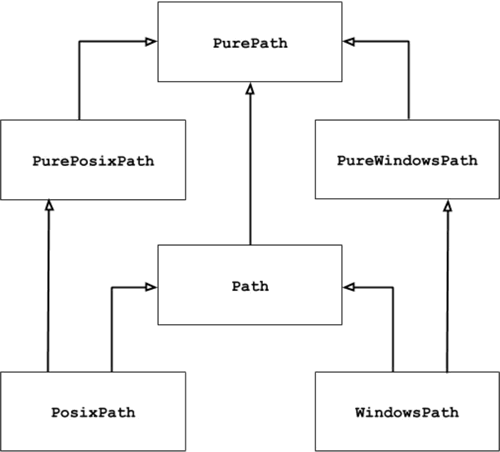
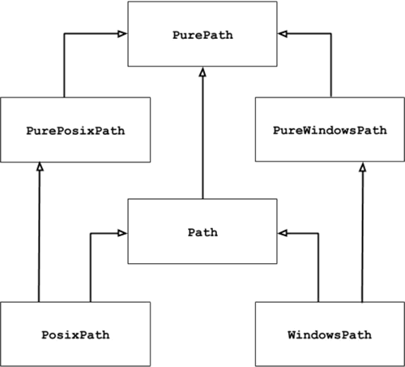

首页 > Python > Python文件操作（I/O）
Python pathlib模块用法详解
和前面章节中引入的模板不同，pathlib 模块中包含的是一些类，它们的继承关系如图 1 所示。

图 1 pathlib模块中类的组织结构
除此之外，PurePath 在创建对象时，也支持传入多个路径字符串，它们会被拼接成一个路径格式的字符串。例如：
可以看到，由于本机为 Windows 系统，因此这里输出的是适用于 Windows 平台的路径。如果想在 Windows 系统上输出 UNIX 风格的路径字符串，就需要使用 PurePosixPath 类。例如：
值的一提的是，如果在使用 PurePath 类构造方法时，不传入任何参数，则等同于传入点‘.’（表示当前路径）作为参数。例如：
另外，如果传入 PurePath 构造方法中的多个参数中，包含多个根路径，则只会有最后一个根路径及后面的子路径生效。例如：
需要注意的是，如果传给 PurePath 构造方法的参数中包含有多余的斜杠或者点（ . ，表示当前路径），会直接被忽略（ .. 不会被忽略）。举个例子：
PurePath 类还重载各种比较运算符，多余同种风格的路径字符串来说，可以判断是否相等，也可以比较大小（实际上就是比较字符串的大小）；对于不同种风格的路径字符串之间，只能判断是否相等（显然，不可能相等），但不能比较大小。
举个例子：
比较特殊的是，PurePath 类对象支持直接使用斜杠（/）作为多个字符串之间的连接符，例如：
通过以上方式构建的路径，其本质上就是字符串，因此我们完全可以使用 str() 将 PurePath 对象转换成字符串。例如：
从图 1 可以轻易看出，Path 是 PurePath 的子类，因此 Path 类除了支持 PurePath 提供的各种构造函数、实例属性以及实例方法之外，还提供甄别路径字符串有效性的方法，甚至还可以判断该路径对应的是文件还是文件夹，如果是文件，还支持对文件进行读写等操作。
和 PurePath 一样，Path 同样有 2 个子类，分别为 PosixPath（表示 UNIX 风格的路径）和 WindowsPath（表示 Windows 风格的路径）。
由于文章篇幅有限，Path 类属性和方法众多，因此这里不再一一进行讲解，后续章节用到时会进行详细的介绍。当然，感兴趣的读者可通过官方手册 https://docs.python.org/3/library/pathlib.html 进行查阅。

图 1 pathlib模块中类的组织结构
pathlib 模块的操作对象是各种操作系统中使用的路径（例如指定文件位置的路径，包括绝对路径和相对路径）。这里简单介绍一下图 1 中包含的几个类的具体功能：图 1 中，箭头连接的是有继承关系的两个类，以 PurePosixPath 和 PurePath 类为例，PurePosizPath 继承自 PurePath，即前者是后者的子类。
- PurePath 类会将路径看做是一个普通的字符串，它可以实现将多个指定的字符串拼接成适用于当前操作系统的路径格式，同时还可以判断任意两个路径是否相等。注意，使用 PurePath 操作的路径，它并不会关心该路径是否真实有效。
- PurePosixPath 和 PureWindowsPath 是 PurePath 的子类，前者用于操作 UNIX（包括 Mac OS X）风格的路径，后者用于操作 Windows 风格的路径。
- Path 类和以上 3 个类不同，它操作的路径一定是真实有效的。Path 类提供了判断路径是否真实存在的方法。
- PosixPath 和 WindowPath 是 Path 的子类，分别用于操作 Unix（Mac OS X）风格的路径和 Windows 风格的路径。
注意，UNIX 操作系统和 Windows 操作系统上，路径的格式是完全不同的，主要区别在于根路径和路径分隔符，UNIX 系统的根路径是斜杠（/），而 Windows 系统的根路径是盘符（C:）；UNIX 系统路径使用的分隔符是斜杠（/），而 Windows 使用的是反斜杠（\）。
PurePath 类的用法
PurePath 类（以及 PurePosixPath 类和 PureWindowsPath 类）都提供了大量的构造方法、实例方法以及类实例属性，供我们使用。PurePath类构造方法
需要注意的是，在使用 PurePath 类时，考虑到操作系统的不同，如果在 UNIX 或 Mac OS X 系统上使用 PurePath 创建对象，该类的构造方法实际返回的是 PurePosixPath 对象；反之，如果在 Windows 系统上使用 PurePath 创建对象，该类的构造方法返回的是 PureWindowsPath 对象。例如，在 Windows 系统上执行如下语句：当然，我们完全可以直接使用 PurePosixPath 类或者 PureWindowsPath 类创建指定操作系统使用的类对象。
from pathlib import *
# 创建PurePath，实际上使用PureWindowsPath
path = PurePath('my_file.txt')
print(type(path))
程序执行结果为：
<class 'pathlib.PureWindowsPath'>
显然，在 Windows 操作系统上，使用 PurePath 类构造函数创建的是 PureWindowsPath 类对象。读者可自行尝试在 UNIX 或者 Mac OS X 系统上执行该程序。
除此之外，PurePath 在创建对象时，也支持传入多个路径字符串，它们会被拼接成一个路径格式的字符串。例如：
from pathlib import *
# 创建PurePath，实际上使用PureWindowsPath
path = PurePath('http:','c.biancheng.net','python')
print(path)
程序执行结果为：
http:\c.biancheng.net\python
可以看到，由于本机为 Windows 系统，因此这里输出的是适用于 Windows 平台的路径。如果想在 Windows 系统上输出 UNIX 风格的路径字符串，就需要使用 PurePosixPath 类。例如：
from pathlib import *
path = PurePosixPath('http:','c.biancheng.net','python')
print(path)
程序执行结果为：
http:/c.biancheng.net/python
值的一提的是，如果在使用 PurePath 类构造方法时，不传入任何参数，则等同于传入点‘.’（表示当前路径）作为参数。例如：
from pathlib import *
path = PurePath()
print(path)
path = PurePath('.')
print(path)
程序执行结果为：
.
.
另外，如果传入 PurePath 构造方法中的多个参数中，包含多个根路径，则只会有最后一个根路径及后面的子路径生效。例如：
from pathlib import *
path = PurePath('C://','D://','my_file.txt')
print(path)
程序执行结果为：
D:\my_file.txt
注意，对于 Windows 风格的路径，只有盘符（如 C、D等）才能算根路径。
需要注意的是，如果传给 PurePath 构造方法的参数中包含有多余的斜杠或者点（ . ，表示当前路径），会直接被忽略（ .. 不会被忽略）。举个例子：
from pathlib import *
path = PurePath('C://./my_file.txt')
print(path)
程序执行结果为：
C:\my_file.txt
PurePath 类还重载各种比较运算符，多余同种风格的路径字符串来说，可以判断是否相等，也可以比较大小（实际上就是比较字符串的大小）；对于不同种风格的路径字符串之间，只能判断是否相等（显然，不可能相等），但不能比较大小。
举个例子：
from pathlib import *
# Unix风格的路径区分大小写
print(PurePosixPath('C://my_file.txt') == PurePosixPath('c://my_file.txt'))
# Windows风格的路径不区分大小写
print(PureWindowsPath('C://my_file.txt') == PureWindowsPath('c://my_file.txt'))
程序执行结果为：
False
True
比较特殊的是，PurePath 类对象支持直接使用斜杠（/）作为多个字符串之间的连接符，例如：
from pathlib import *
path = PurePosixPath('C://')
print(path / 'my_file.txt')
程序执行结果为：
C:/my_file.txt
通过以上方式构建的路径，其本质上就是字符串，因此我们完全可以使用 str() 将 PurePath 对象转换成字符串。例如：
from pathlib import *
# Unix风格的路径区分大小写
path = PurePosixPath('C://','my_file.txt')
print(str(path))
程序执行结果为：
C:/my_file.txt
PurePath类实例属性和实例方法
表 1 中罗列出了常用的以下 PurePath 类实例方法和属性。由于从本质上讲，PurePath 的操作对象是字符串，因此表 1 中的这些实例属性和实例方法，实质也是对字符串进行操作。| 类实例属性和实例方法名 | 功能描述 |
|---|---|
| PurePath.parts | 返回路径字符串中所包含的各部分。 |
| PurePath.drive | 返回路径字符串中的驱动器盘符。 |
| PurePath.root | 返回路径字符串中的根路径。 |
| PurePath.anchor | 返回路径字符串中的盘符和根路径。 |
| PurePath.parents | 返回当前路径的全部父路径。 |
| PurPath.parent | 返回当前路径的上一级路径，相当于 parents[0] 的返回值。 |
| PurePath.name | 返回当前路径中的文件名。 |
| PurePath.suffixes | 返回当前路径中的文件所有后缀名。 |
| PurePath.suffix | 返回当前路径中的文件后缀名。相当于 suffixes 属性返回的列表的最后一个元素。 |
| PurePath.stem | 返回当前路径中的主文件名。 |
| PurePath.as_posix() | 将当前路径转换成 UNIX 风格的路径。 |
| PurePath.as_uri() | 将当前路径转换成 URL。只有绝对路径才能转换，否则将会引发 ValueError。 |
| PurePath.is_absolute() | 判断当前路径是否为绝对路径。 |
| PurePath.joinpath(*other) | 将多个路径连接在一起，作用类似于前面介绍的斜杠（/）连接符。 |
| PurePath.match(pattern) | 判断当前路径是否匹配指定通配符。 |
| PurePath.relative_to(*other) | 获取当前路径中去除基准路径之后的结果。 |
| PurePath.with_name(name) | 将当前路径中的文件名替换成新文件名。如果当前路径中没有文件名，则会引发 ValueError。 |
| PurePath.with_suffix(suffix) | 将当前路径中的文件后缀名替换成新的后缀名。如果当前路径中没有后缀名，则会添加新的后缀名。 |
对于表 1 中的这些实例属性和实例方法的用法，这里不再举例演示，有兴趣的读者可自行尝试它们的功能。
Path类的功能和用法
和 PurPath 类相比，Path 类的最大不同，就是支持对路径的真实性进行判断。从图 1 可以轻易看出，Path 是 PurePath 的子类，因此 Path 类除了支持 PurePath 提供的各种构造函数、实例属性以及实例方法之外，还提供甄别路径字符串有效性的方法，甚至还可以判断该路径对应的是文件还是文件夹，如果是文件，还支持对文件进行读写等操作。
和 PurePath 一样，Path 同样有 2 个子类，分别为 PosixPath（表示 UNIX 风格的路径）和 WindowsPath（表示 Windows 风格的路径）。
由于文章篇幅有限，Path 类属性和方法众多，因此这里不再一一进行讲解，后续章节用到时会进行详细的介绍。当然，感兴趣的读者可通过官方手册 https://docs.python.org/3/library/pathlib.html 进行查阅。
关注公众号「站长严长生」，在手机上阅读所有教程，随时随地都能学习。内含一款搜索神器，免费下载全网书籍和视频。

微信扫码关注公众号